Danmark har flere århundreders
tradition indenfor pottemageri og set i forhold til landets størrelse,
har der været rigtig mange pottemagere – næsten enhver lille by
har haft en pottemager - mange kendt ud over landets grænser.
Vi starter rundturen i
det 19.århundrede på Bornholm (en lille ø i Østersøen).
Michael Andersen & Søn, Rønne på Bornholm
(1890-)
Fabrikken bliver grundlagt
af pottemager Jens Michael Andersen, hvis 4 sønner alle
bliver uddannet keramikere og er virksomme på fabrikken (den tidligere
Th. Stibolts Terrakottafabrik).
I starten fremstilles
brugsting til køkkenet, modeller af kendte kunstneres figurer,
græske vaser og oldnordiske krukker.
Den ældste søn Daniel
Folkmann Andersen (1885-1959) viser sig at være yderst kreativ
og kunstnerisk. Allerede fra 1905 sætter han dagsordenen for fabrikkens
kunstneriske udvikling. Hans former bærer ofte plante- eller dyredekora-tioner
med glasurer i mange farver samtidigt. Disse varer bliver fremstillet
i blymajolika (lervarer med blank løbeglasur), hvilket passer
godt til vasernes udformning, der er efter datidens mode, som
udspringer af fransk art nouveau stil (1890-1910). I Danmark bliver
stilen kaldt ”skønvirke” efter kunstindustritidsskriftet af samme
navn fra 1914 (stilen er længere om at slå igennem her i landet).
Broderen Michael Ejner
Andersen lancerer i 1920’erne majolika serierne ”Dania” og
”Kobolt” i enkle og glatte former.
1935 får Daniel Andersens
nyskabelse – keramik i persia-teknik – guldmedalje på verdensudstillingen
i Bruxelles.
 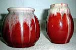
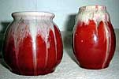

Kunstneren Marianne
Starck (1931-) bliver ansat i 1955 og bliver en kunstnerisk
dynamo især indenfor fabrikkens stentøj, som hun former og dekorerer
i den for dansk design kendte rene stil i 50’, 60’ og 70’erne.

Kunstnere: Th. Stibolt
(1848-1901, han sælger sin terrakottafabrik til Ejner Michael
Andersen i 1890), Jacob. J. Bregnø (1877-1946, billedhugger),
Knud Kyhn (1880-1969, maler, billedhugger og keramiker),
Ernst Weber, m.fl.
I 1890’erne benyttes et
presset stempel: Michael Andersen i gotiske bogstaver, ca. 1900-1916
bruger man det samme stempel med latinske bogstaver. Presset stempel
MA & S bruges fra 1916 og fabrikkens senere kendte 3 fisk
(Rønnes byvåben) fra 1930.
Der kan være genstande,
som er stemplet C. V. Kjær (en københavnsk grosserer, der
1900-14 får lavet ting på fabrikken, udført af især Jens Michael
Andersen, efter egne tegninger med bl.a. reliefdekoration, kaldet
lerintarsia).
Fabrikken fremstiller
stadigvæk keramik, men i meget lille omfang.
L. Hjorths Terrakotta-Fabrik, Rønne på Bornholm
(1859-1993)
Pottemager Lauritz
Adolph Hjorth (1834-1912) starter med at fremstille vandkølere,
urtepotteskjulere og mælkekander, men fra 1862 bliver det alene
vaser og figurer i terrakotta. Modeller af antikke græske vaser
og af danske oldsager er højeste mode og bliver solgt over hele
verden. Hjorths terrakottating er ligeledes rigt repræsenteret
på tidens verdensudstillinger og tildeles mange præmier.
Ca. 1900 kommer art nouveau
stilen (skønvirkestilen) også til Hjorth ofte anvendt i sortbrændt
terrakotta.
Stærkt inspireret af den
danske billedhugger Bertel Thorvaldsen, bliver der fremstillet
statuetter i terrakotta.
Lauritz Hjorths 2 sønner
Peter Christian Hjorth (1873-1959) og Hans Adolph Hjorth
(1878-1966) overtager fabrikken i 1912 og er uddannet keramikere.
Hans Hjorth fremstiller
fabrikkens første stentøj i 1902 og får flere internationale priser
i 1910,1913, 1915 (San Francisco) og 1929 (Barcelona) for dette
fremragende stentøj. Hans Hjorth startede eget værksted 1931.
Apotekerkrukker har været
en specialitet hos Hjorth siden 1929, hvor de første blev lavet
til Rønne Apotek.
Danmarks første egentlige
stentøjsserie bliver fremstillet hos Hjorth i årene 1913-40 og
meget af dette bliver dekoreret af søsteren Thora Margrethe
Hjorth (1875-1970). Omkring 2. verdenskrig produceres der
hvide fajanceting.
 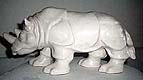
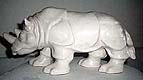
I tidens løb har der været
adskillige kunstnere tilknyttet fabrikken: Holger Drachmann
(1846-1908, kunstmaler og digter), Kristian Zahrtmann (1843-1917,
kunstmaler), Gertrud Kudielka (1896-1984), Adam Fischer
(1888-1968), Erik Hjorth (1906-82, søn af Peter Hjorth),
Lisbeth Munch-Petersen (1909-97, datter af Hans Hjorth),
Helge Christoffersen (1925-65), Ursula Munch-Petersen
(1937- barnebarn af Hans Hjorth), Eva Sjøgren, Jane
Reumert (1942-), Ulla Gahrn (1937-) med flere.
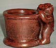
1982 overtager keramikerne
Ulla Hjorth (1945-) og Marie Hjorth (1941-) fabrikken
efter faderen Erik Hjorth (1906-82).
De første ting er ustemplede,
så stemples eller håndsigneres med L. Hjorth og fra 1902 tilføjes
en hjortefigur, senere kommer der en ring om figuren. Hans Adolph
Hjorth håndsigner sine egne unika ting, ligeså visse senere kunstnere.
1993 lukker fabrikken,
men i 1995 bliver den genåbnet som arbejdende museum.
Søholm, Rønne på Bornholm (1835-1996)
Søholm er den ældste keramikfabrik,
der har ligget på Bornholm.
Fabrikken startes af Herman
Sonne Wolffsen (-1887) og Edvard Chr. Sonne (-1876)
i 1835, men fra 1841er Wolffsen alene om fabrikken. Navnet Søholm
overtages fra Wolffsens og Sonnes gamle arbejdsplads – en fajancefabrik,
der har ligget i Hvidøre, Hellerup ved København i 1828-39 (i
1834 bortforpagtes denne).
I starten bliver der produceret
meget af den gule bornholmske ”fajance” til husholdning: Buddingforme,
krukker, skåle, fade o.l.

Under 2. verdenskrig fremstiller
man piber, i dag er der meget få af disse tilbage. I 1930’erne,
1940’erne og 1950’erne bliver der produceret en del stel.
Vaser og skåle af Nis Stougaard (1906-87) – ofte
med motiver fra Bornholm.
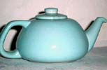
Der kan nævnes kunstnere
som Hans Ancher Wolffsen (1870-1924, barnebarn af Herman
Sonne Wolffsen), Henning Seidelin (1904-87, billedhugger),
Johannes Hedegaard (1915-, billedhugger), Nanna Ditzel
(1923-, møbelarkitekt), Arne Ranslet (1931-), Gerd Hiort
Petersen (1937-), Noomi Backhausen (1938-), Maria
Philippi, Haico Nitzsche
(1943-), Per Rehfeldt
(1951-) m.fl.
I 1960’-1970’erne bliver
der designet meget stentøj, som i dag er samlerobjekter for retrofans.
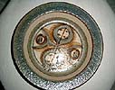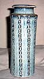
Man kender ikke stempler
fra fabrikkens start.
Fra ca. 1910 kendes et
rundt, malet mærke med krone og skib (der har været forskellige
mrk.). Andet er med et malet eller presset stempel med skriften
Søholm, Bornholm. Visse ting er stemplet H. Wolffsen &
Søn (ca.1903-15).
Bornholmske aviser beskriver
i 1931 Søholm som den førende indenfor plagiater af Ipsen, Hjorth
og Den kgl. Porc.
Fabrikken lukker 1996.
P. Ipsens Enke, Kbh. Utterslev (1843-1955)
Fabrikken grundlægges
1843 af pottemager Rasmus Peter Ipsen (1815-60) fra Bornholm.
Peter Ipsens helt unge
år er helt Oliver Twist-agtig – han går meget grueligt igennem,
inden heldet er med ham.
Han må som stor dreng
arbejde fra tidlig morgen til sen aften med hårdt fysisk arbejde
– en tid, der giver ham en helbredsmæssig svækkelse, som han kommer
til at ”bære på” resten af livet. Med hjælp fra en ven kommer
han ind på Den kongelige Porcelænsfabrik, dette viser sig at være
det rette for Ipsen. Han udvikler sig til en mesterlig drejer
med
sans for form og farver
og i 1843 – 28 år gammel, starter han sit eget pottemagerværksted
og gifter sig med Lovise Christine Ipsen (1822-1905).
Hængeurtepotter i terrakotta
bliver i starten værkstedets levebrød. Derudover fremstiller Ipsen
figurer, statuetter samt krukker, vaser og opsatser - også i terrakotta
- i antik stil med bemalinger i oliefarver - ofte efter motiver
hentet fra den danske billedhugger Bertel Thorvaldsen (1770-1844).
Peter Ipsen får skabt
en god kontakt til datidens danske kunstnere – heraf mange billedhuggere,
og det går ham så godt, at han i 1847 har råd til at bygge fabrikken
i Utterslev.
Peter Ipsen dør i en tidlig
alder kun 45 år gammel i 1860. Hans enke Lovise Ipsen fører fabrikken
videre, hvilket er ret usædvanligt af en kvinde på den tid, men
hun har et indgående kendskab til fabrikken, i det hun har haft
sin daglige gang der. Den ældste søn Bertel Ipsen (1846-1917)
bliver udlært pottemager og overtager som 19-årig ledelsen for
sin mor i 1865.
Bertel Ipsen viderefører
kontakterne med kunstverdenen og fremstillingen af terrakotta
varerne i antik stil og statuetter fortsætter, disse fremstilles
i samarbejde med førende danske billedhuggere og malere ofte i
den Thorvaldenske stil.


Bertel Ipsen deltager
på flere verdensudstillinger og efterspørgselen på de antikke
ting er så stor, at der åbnes butikker i Paris og London.
Terrakottavarerne fra
P. Ipsen og L. Hjorts tidlige periode ligner til forveksling hinanden,
og hvis disse ikke er stemplet kan det være næsten umuligt at
se forskel. Ofte er det de samme motiver og modeller, der fremstilles.
Men skønt de 2 fabrikker er konkurrenter, har de et vist samarbejde.
Ipsen får nogle ting fremstillet hos Hjorth, og medarbejdere fra
Hjorth er af og til på korte arbejdsvisitter hos Ipsen.
Bertel Ipsen fremstiller
i 1872 fabrikkens første glasur.
Bertel Ipsen er klar over,
at en ny stil skal indføres. Moden ændrer sig hen imod 1900, og
de antikke tings popularitet er ved at være dalende. I dag sælges
disse ting for meget høje summer.
Stilskiftet begynder så
småt i 1890’erne, i det man går over til at sortbrænde terrakottavarerne,
hvilket indbringer fabrikken mange præmier, men jugendstilen (skønvirke)
er kommet på mode og indføres hos Ipsen bl.a. via
Thorvald Bindesbøll (1846-1908, arkitekt og billedhugger), Georg Jensen
(1866-1935, billedhugger og sølvsmed) og
Chr. Joachim (1870-1943, maler og keramiker), der alle samarbejder med Ipsen i 1890’erne.
Bindesbøll, der i dag af mange betragtes, som en af pionererne indenfor dansk keramik.
En meget excentrisk kunstner. Han bliver betragtet som en provo
og bliver ikke uden grund kaldt ”Bølle” – enten kan man lide ham,
eller også kan man ikke fordrage ham, men Bertel Ipsen synes han
er spændende og inspirerende, han har et godt samarbejde med ham.
Mange af hans modeller anvendes helt frem til fabrikkens lukning.
Georg Jensen fremstiller kun nogle enkelte ting for Ipsen før han helliger sig sølvet
og starter 1904 sin verdensberømte sølvsmedje.
Chr. Joachim kendes for nogle vaser og krukker med svampemotiver. Skønt han mangler
højre arm, formår han ved en enorm viljestyrke at uddanne sig
som maler og bliver i en årrække kunstnerisk leder på fajancefabrikken
Aluminia og kunstnerisk direktør på Den kgl. Porcelænsfabrik.
Fra 1910 fremstilles en
mængde krukker, vaser, opsatser osv. med matte gul- og rødgrønne
glasurer – også kaldet papegøjeglasurer. Disse
varer er i dag ofte, det som folk forbinder med Ipsen keramik.
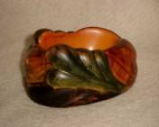
1917 dør Bertel Ipsen
og fabrikken købes af Carl Stenders Kunstforlag - en ny
periode indledes.
Nye glasurer bliver udviklet
– bl.a. en blå.
I det hele taget kommer
der en masse nye glasurer til i perioden 1920-40: ”Kamæleonglasur”
(en glasur, der skinner i mange farver tilsat guld, platin eller
sølv), jadeglasur (mat grøn), ”Danitglasur” (rødlilla eller blågrøn
glasur i et stort krakeleret netværk, metalglasur især i grønne
farver, bronzeglasur, eliteglasur (hvid fajanceglasur), elfenbensglasur,
okseblodsglasur og celadonglasur (grågrøn blank) m.m..
Georg Thylstrup (1884-1930, billedhugger, sølvsmed og keramiker) fremstiller
en række figurer som fiskerkoner, havfruer og fabeldyr i perioden
1924-30. Disse figurer er i dag meget eftertragtede.
Kai Nielsen (1882-1924, maler og billedhugger) fremstiller 1910 en lille nordisk
pigefigur kaldet ”Venus Kalipygos” (navnet er taget fra den græske
kærlighedsgudinde Afrodites tilnavn Kalipygos, der betyder ”Hende
med den smukke ende” ), denne figur bliver en stor succes.
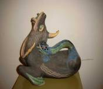
Ib Just Andersen (1884-1943, billedhugger, maler og sølvsmed) fremstiller
i 1940 nogle enkelte havfruefigurer, der minder meget om de verdensberømte
figurer og vaser m.m. han fremstiller i Diskometal og tin på sin
egen sølvsmedje.
Axel Salto (1889-1961, grafiker, maler og keramiker) arbejder kortvarigt hos Ipsen
og fremstiller sine knoppede og
spirende vaser samt hjorte-
og antilopehoveder. Ting som i dag sættes lig med Salto og er
særdeles efterspurgte indenfor dansk kunsthåndværk fra det 20ende
århundrede.
En række internationale
kendte kunstnere har været tilknyttet fabrikken, men da det vil
række for vidt at nævne alle, skal der her tilføjes nogle udover
dem, der allerede er nævnt: Lauritz Jensen (1859-1935, billedhugger
), Jens Ferdinand Willumsen (1863-1958, maler), Ellen Locher (1883-1956,
billedhugger), Axel Sørensen (1891-1967, keramiker), Axel Jensen
(billedhugger), Bode Willumsen (1895-1987, billedhugger og keramiker),
Arno Malinowski (1899-1976, billedhugger), Charles Bøgh (billedhugger),
Adam Thylstrup (billedhugger), Niels Norvil (billedhugger og keramiker),
Arne Bang (1901-83, billedhugger og keramiker), Volmer Bahner
(1912-, billedhugger og sølvsmed), Johannes Hedegaard
(1925-, billedhugger) og blandt mange andre.

Fabrikkens stempler er
presset P.I. (1843-50), P. Ipsen (1850-70), P. Ipsen Eneret (1871-1917)
og P.I.E. med en krone (1918-55) og der foruden kan kunstnerens
signatur forekomme.
1955 lukker fabrikken.
Konkurrencen bliver for stor bl.a. fra stentøj, som man hos Ipsen
vælger ikke at fremstille. Det er blevet til et utal af medaljer
på udstillinger verden over fra 1852-1935.
Der findes en meget
stor samling af Ipsen keramik Jugendhuset, Varde.
Herman H. C. Kähler, Næstved på Sjælland
(1839-1974)
Eftertiden må glæde sig
over, at pottemager Joachim Christian Herman Kähler (1808-1884)
rejste fra hertugdømmet Holsten (Holstein) og valgte at slå sig
ned i Næstved (Nestved) i 1839. Hermed var grundstenen lagt til
et af de største flagskibe indenfor dansk keramik, med fremstilling
af eminent og internationalt berømmet kunstkeramik.
I værkstedets første -
ca. 30 år - bliver der fremstillet etagekakkelovne (i disse år
værkstedets levebrød og speciale) samt kildevandsdunke og brugsting
til køkkenet med en smule hornmaling.
1872 overtager sønnerne
Herman August Kähler (1846-1917, fra ham stammer HAK’et)
og Carl Frederik Kähler
(1850-1920) værkstedet. De er begge udlært pottemagere hos faderen. Herman A. overtager
ovnfremstillingen, og følger sin lyst til at få sit eget og 1875
bygger han det værksted, vi i dag forbinder med Kählers værksted
i Næstved. Carl, som overtog pottemagerdelen, står nu alene tilbage
i det gamle værksted, og beslutter i 1896 at sælge.
I 1883 søger opretteren
- af Københavns ”Tegneskole for Kvinder” - Vilhelm Klein (1835-1913,
arkitekt) samarbejde med et værksted, som kan fremstille,
brænde og glasere de fade og krukker, som hans elever dekorerer.
Samarbejdspartneren bliver Herman A. Kähler, og hermed er startskuddet
affyret til en lang række frodige og kunstneriske år, som skal
vise sig at gøre værkstedet til en ener i dansk keramiks historie.
Samarbejdet med Klein
bliver ikke særlig langt, men det giver Herman A. ideen til at
prøve noget mere end fremstilling af ovne.
Han eksperimenterer på
livet løs med glasurer - bliver ved og ved - hans mål er en rød
lustreglasur (metalglinsende overflade, f. eks. kobber), som brugtes
af den italienske Maestro Giorgio fra Gubbio (Italien) i 1500-tallet.
I 1888 præsenterer han en rubinrød glasur, som senere skal vise
sig at gøre ham verdensberømt, og som i dag kaldes ”Kähler
rød”.
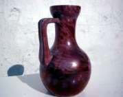
I mellemtiden har de første
af en lang række kunstnere etableret samarbejde med værkstedet:
Fra 1885-1907 - Hans
Andersen Brendekilde (1857-1942, maler) dekorer nogle få ting
med motiver fra eventyr- og sagnverdenen - trolderier, hekse osv.
– tit med modellerede figurer.
Fra 1886-1888 - Carl
Ove Julian Lund også kaldet ”Døve Lund”(1857-1936, porcelænsmaler)
prøver med underglasur-maleri (dekoration direkte på det rå materiale),
hvilket viser sig ikke at være så godt egnet til lertøj som til
porcelæn, så det fænger ikke rigtig an.
Fra 1888-1914 - Karl
Hansen Reistrup (1863-1929, maler og billedkunstner),
der bliver værkstedets kunstneriske leder.
Han får et tæt samarbejde
med Herman A. De vaser og krukker, han formgiver, og som
Herman A. drejer, forsynes med modellerede dyrehoveder
og egner sig i stil og facon (art nouveauagtig) fortrinligt til
den nyskabte røde lustreglasur. Dette samarbejde bliver præsenteret
på verdensudstillingen i Paris 1889. Den røde lustre begejstrer
og med ´et slag er Kähler verdensberømt. Mange internationale
museer køber godt ind.
Hansen Reistrup fremstiller
i de kommende år en række store vægfriser bl.a. ”Påfuglefrisen”
i 1897, der sælges til Nationalmuseet i Stockholm, ”Ørnefrisen”
i 1897 købes af Sevres-Museet (hvor han i nogle år var dekorationsmaler).
Der foruden laves der friser til Århus Teater, Ny Carlsberg Glyptoteket
og Københavns Rådhus (krage- og mågefrise) blandt mange andre.
Elefantporten og elefanthovederne hos bryggeriet Carlsberg i København
er også hans værk.
Fra 1889-1890 - Laurits
Andersen Ring (1854-1933, maler) laver kun nogle få ting hos
Kähler; han foretrækker kunstmaleriet. Gifter sig 1896 med Herman
A’s datter Sigrid Kähler (1874-1923), som arbejder på værkstedet
med dekoration og som også fremstiller et par enkelte vaser med
blomsterdekoration. Da hun først er blevet gift helliger hun sig
det husmoderlige.
Fra 1890-1891 (også kort
i 1887) - Thorvald Bindesbøll (1846-1908, arkitekt) formgiver
et mindre antal vaser og krukker med begitning (flydende lerlag)
og sgrafitto (indridset mønster i begitning) i abstrakte mønstre
efter fransk art nouveau stil (periode 1890-1910, der i Tyskland
kaldes jugendstil og i Danmark kaldes ”skønvirke” efter et dansk
kunstindustri tidsskrift af samme navn udgivet første gang i 1914
og illustreret af Bindesbøll; stilen er længere om at slå igennem
i Danmark).
Bindesbøll er en meget
dominerende type - primadonnaagtig - og mener ikke, der er plads
til både Hansen Reistrup og ham, men deri er Herman A. slet ikke
enig, så beskeden er nærmest: ”Hvis ikke du kan lide lugten i
bageriet, må du finde et andet sted”, så ”Bøllen” (Bindesbølls
øgenavn) forlader værkstedet.
Disse år er meget succesfyldte.
Kählerværkstedet deltager i udstillinger overalt i Europa og USA,
og der sælges masser til Europas førende museer. Medaljer høstes
såvel som rosende omtale i tidens hotteste kunsttidsskrifter.
Der skabes forretningsforbindelser over hele verden – succesen
er stor.
Fra 1901 kommer Herman
A. Kählers søn Herman Hans Christian Kähler (1876-1940,
udlært hos faderen) som 25-årig i ledelsen af værkstedet
– en ny tid starter.
Herman H C er træt af
den røde lustre og mener, at tiden er inde til forandring. Han
er, ligesom den unge generation Bertel Ipsen fra P. Ipsens Enke,
fascineret af Bindesbøll og dennes begittede keramik. Så det passer
ham fint, at en anden jævnaldrende Bindesbøll fan - Svend Hammershøi
- ankommer til værkstedet, og starter med at fremstille begittemalede
krukker og vaser. Herman H C selv arbejder ihærdigt med hornmaleri,
som han gerne ser indført igen hos Kähler på drejede pottemagerting.
Pottemagertraditionen har i en årrække været skubbet lidt i baggrunden
til fordel for de formstøbte varer. 1896 ankommer den legendariske
drejer Lars Peter Olsen (1865-1950)også kaldet gamle Olsen
fra det ”gamle værksted”, som Carl F Kähler lige har solgt. Lars
Peter Olsen og Herman H C kører nu parløb med eksperimenterne
med hornmaleriet. Fra 1908 indføres hornmaleriet, som hurtigt
bliver Kählers hovedvare, og som eftertiden forbinder med
Kähler keramik.
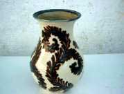

Hornmaleriet er en svær
teknik, der kræver en sikker hånd, og især når der arbejdes vådt
i vådt. Der fyldes begitning (farvet ler rørt op i vand) i et
udhulet kohorn, hvor spidsen er skåret af. I denne spids er der
isat spidsen af en gåsefjer. Gåsefjeren snittes skråt af og kan
derved anvendes som pen. Maleren kan med tommel- og pegefinger
klemme omkring gåsefjeren og dermed styre strømmen af begitning.
Hos Kähler arbejdes der med op til et dusin horn til et stykke
dekorations-arbejde.
Herman H C får ved et
dynamisk lederskab oparbejdet en meget dygtig malerstab, som han
forstår at motivere, bl.a. ved at give malerne delvis fri udfoldelsesmulighed
indenfor givne rammer. Han fører Kählers hornmalede keramik frem
til noget af det bedste og mest unikke i verden inden for den
genre.
De første ting er dekoreret
i mørke brune, blå og grønne farver med mønstre inspireret af
skønvirkestilen, senere bliver
farverne lysere og motiverne
lettere. Både farver og motiver er hele tiden under udvikling,
ligesom der kommer nye varer til - te- og kaffestel, urtepotter,
lysestager, askebægre (bl.a. CLOC for De Danske Spritfabrikker).
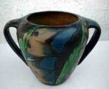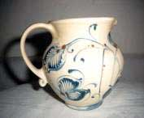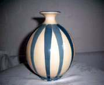
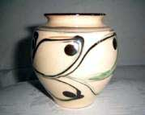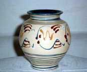
Af kendte malerdamer kan
nævnes Signe Steffensen også kaldet Stefan (1881-1935),
hun er i mange år førstedame på malerstuen og fremstiller også
nogle vaser, lysestager og lampefødder i ornamenteret skønvirkestil.
Julie Kabell, Tulle Emborg, Nelly Lundstein, Elisabeth
Ahlmann og Herman H C’s søster Stella Kähler blandt mange
andre.
Fra 1893-1948 - Svend
Hammershøi (1873-1948, maler) bliver den kunstner, som
får det længstvarende samarbejde med Kählerværkstedet og også
den kunstner, der hele tiden udvikler sig, hvilket afspejler sig
i hans keramik gennem alle årene.
Måske henter han ny inspiration
ved ind i mellem at være væk fra værkstedet og optaget af andre
ting, såsom kunstmaleriet og bogskrivning (om Bindesbøll). Han
arbejder også direkte sammen med Bindesbøll i 1890’erne hos
G. Eifrig, Københavns
Lervarefabrik i Valby. Samarbejdet var så tæt, at det tit var
ham, der efter tegning drejede, formede og dekorerede, så Bindesbøll
blot skulle signere. Det var et stormfuldt samarbejde, hvor Hammershøi,
nok på grund af sin forblændelse af Bindesbøll, fandt sig i meget.
Samarbejdet med Bindesbøll
præger de første vaser og krukker hos Kähler med begittemalet
reliefdekoration i bladornamentik a’ la Bindesbøll.
Herefter prøver han kræfter
med terrakottaen i nogle gotiske græske og romerske antikke former
med bladornamentik som dekoration.
Senere bliver terrakottatingene
også dekoreret med stemplingsmønstre (mønster der udskæres i et
stempel, som, ved at rulle hen over den formede lergenstand, afsætter
mønsteret i det våde ler).
Hammershøi bevæger sig
til sidst over i geometriske former med markante profileringer
og ofte påsat små modellerede ”knopper”. Disse ting
- vaser, krukker, skåle, urtepotter, urner m.m. med en grå/sort/hvid
glasur bliver en kæmpesucces og er i dag den Kählerkeramik,
som forbindes med Svend Hammershøi.
Han bliver aldrig gift
og får ingen børn, men et eller andet sted må han have følt sig
ensom - overalt på arbejde og rejser følger surrogatbørnene (dukker)
ham.
Fra 1913-1941 - Jens
Thirslund (1892-1942, maler og keramiker) Han bliver
i 1914 gift med Herman A’s datter Stella Kähler (1886-1948,
malerdame) og bliver værkstedets kunstneriske leder indtil
kort før sin død.
Thirslund er et naturtalent
ud i malerkunsten. Bohemetypen, der indretter sin egen lille afdeling
på værkstedet, som en rigtig kunstnerhule - fyldt med alskens
ting og sager overalt på gulv, borde og vægge. Et sted som bliver
samlingspunkt for kunstnerisk hygge og samvær for datidens danske
kunstnerkreds.
Den kunstneriske inspiration
henter han hos det orientalske, især det persiske. Stilen omsætter
han i dekorationer, som tilføjes et humoristisk strejf – ofte
dyr og mennesker.
Han arbejder også med
hornmaling, men vil gerne prøve andre ting hvilket fører ham frem
til det, der bliver hans speciale. Trylleri med lystreglasur.
Han maler med lystreglasur
i mange farver på en meget speciel måde med mange finurlige
”kruseduller” og sving i penselen. Dekorationerne ikke alene anvendes
på vaser og krukker, men også på fliser til ovne og borde.
Thirslund fremkommer med
den sort/grå/hvide glasur i 1926, som anvendes især på
Svend Hammershøis ting. Senere fremtryller han en lignende glasur
i turkis/sort.
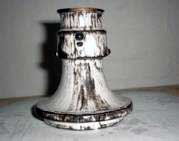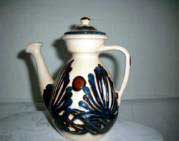
1917 dør Herman A Kähler.
Primus motoren der fik sat skub i det hele.
Efter 1. verdenskrig var
der opnået salgskanaler og repræsentation på de førende museer
over hele verden.
Fra 1917-1937 - Helge
Daner Jensen (1899-1986, maler) Han arbejder med hvidglaseret
fajance, som han dekorerer med en humoristisk streg (omridstegning)
i klare farver på stilrene vaser og krukker. Det er dekorationen,
der optager ham. Han bruger omridstegning ligesom den lidt ældre
”Kähler kunstner” keramikeren Jais Nielsen, men udtrykker og vælger
mere livsglade motiver end sidstnævnte.
Han bliver gift med Herman
H C’s datter Karen Kähler (1903-1990,malerdame) i 1925,
men skilt i 1935, hvorefter han forlader Kähler værkstedet.
Fra 1918-1925 - Jais
Nielsen (1885-1961,maler og keramiker). Han fremstiller nogle
få ting med bibelske motiver i omrids-tegninger. Motiver som han
bliver så kendt for, dog ikke fra sin Kähler tid, men fra sin
periode hos Den kgl. Porcelænsfabrik.
Fra 1921-1924 - Kai
Nielsen (1882-1924, billedhugger og maler). Han er uhyre flittig,
men stiller så høje krav til sig selv, at det ikke bliver til
ret mange nye figurer. Han kommer til Kählerværkstedet kort før
sin død, så det har nok også spillet ind - helbredet er ikke,
hvad det har været. Resultatet bliver, at han lader fremstille
mange af sine allerede kendte figurer med den forandring at de
er i større format. Den lille ”Venus Kalipygos” (Kalipygos betyder:
”Hende med den smukke ende”) som han i 1910 laver til P. Ipsens
Enke - se artikel - bliver også fremstillet hos Kähler. Hos Kähler
står hun på en rund sokkel i stedet for på en firkantet som hos
Ipsen.
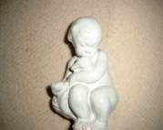
Fra 1921-1925 - Knud
Kyhn (1880-1969, billedhugger, keramiker og maler). Kendt
for sine dyrefigurer - ofte katte og bjørne. De bliver
fremstillet i rød terrakotta.
I 30’erne kommer en række
nye glasurer til. En blå og en sort lustre. Kraftig gul og
orangegul uranglasur. En turkis, der i dag kaldes ”gammel
turkis”. Mat brun, grøn og orange glasur
Stempeldekoration kommer
for at blive. Sgrafitto teknik genoptages i 40’erne.


Herman H C Kähler dør
1940.
Fjerde generation tager
over. Sønnerne Nils Joakim Kähler (1906-1979, keramiker)
tager sig af det kunstneriske og Herman Jørgen Kähler (1904-1996,
keramiker) tager sig af det administrative og til dels glasurfremstilling.
Begge sønner bliver udlært
i 20’erne og Nils bliver med tiden drejer for Svend Hammershøi,
hvilket kan ses i hans
egne arbejder gennem tiden
- moderne udgaver af den Hammerhøiske stil med den grå/sort/hvide
glasur. Stentøj med turkis og gul glasur dekoreret med
stempling i f.eks. fiskebenmønster og saltglaseret stentøj.
Formerne tager ofte udgangspunkt i cylinderen. Han har også lavet
en del tepotter og sparedyr.


Det bliver Nils J Kähler,
der kommer til at dominere rent kunstnerisk og præge Kähler værkstedets
sidste tid fra 40’erne og frem til lukningen. Foruden HAK signerede
Nils Kähler altid sine ting Nils
Fra 1944-1955 - Astrid
Tjalk (1925-, malerpige og dekoratør). Får, ligesom Signe
Steffensen i sin tid fik, lov at udfolde sine dekorative evner
– ofte abstrakte og eksotiske mønstre gerne med fiskemotiver.
Af malerpiger må også
nævnes Gete Petersen, hvis kendetegn er mønster a’ la Tjalk.
Eva Haase’ kendetegn er motiver med fugle og fisk.
Fra medio 50’erne og til
ultimo 60’erne udføres der en række bygningsudsmykninger og store
skulpturer. Disse opgaver ledes af Herman J Kähler og udføres
af kunstnerne Bode Willumsen (1895-1987, billedhugger, keramiker
og grafiker), Arne Bang (1901-1983, billedhugger og keramiker),
Ejler Bille (1910-, maler og billedhugger), Gunnar Westmann
(1915-1985), Lennart Rodhe (1916-, maler og professor), Rasmus
Nellemann (1923-, grafiker), Allan Schmidt (1923-1989, maler),
Jens Rosing (1925-, tegner), Eva Sørensen (1940-, billedhugger
og keramiker) blandt mange andre.
Kähler værkstedet deltager
i et væld af internationale udstillinger og får så mange medaljer,
at det vil række for vidt at nævne alle.
Ligeledes er rækken af
kunstnere, som har været hos eller samarbejdet med værkstedet
lang. Udover de, der allerede er
nævnt, kan der tilføjes: Fritz Syberg (1862-1939, maler), Carl
Johan Bonnesen (1868-1933, billedhugger), Gerhard Henning (1880-1967,
billedhugger), Kay Bojesen (1886-1958, sølvsmed), Gunnar Nylund
(1904-1996, billedhugger og keramiker), Erik Stockmarr (1905-1963,
tegner), Erik Nyholm (1911-1990, maler og keramiker), Ernst Eberlein
(1911-1993, billedhugger), Christian Poulsen (1911-1991, keramiker),
Gutte Eriksen (1918-, keramiker), Ib Wolffbrandt (1919-1993, billedhugger
og keramiker), Georg Hetting (1920-, keramiker), Erik Reiff (1923-,
maler og keramiker), Bo Melander (1928-1995, keramiker), Conny
Walther (1931-, keramiker), Niels Refsgaard (1934-, keramiker)
Myre Vasegaard (1936-, keramiker), Sten Lykke Madsen (1937-, keramiker),
Alev Siesbye (1938-, keramiker), Carl Cunningham-Cole (1942-,
keramiker), Peder Rasmussen (1948-, keramiker) blandt mange
andre.
De tidlige ting stemples
ved at presse, indridse eller male Kähler navnet. Stempling af
genstandene starter sporadisk i 1872 med et HAK, og fra 1913 bliver
det obligatorisk med et presset og sammenskrevet 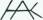 ,
designet af Svend
Hammershøi. Det bruges helt frem til værkstedets ophør,
af og til sammen med kunstnersignatur.
Både Nils J. Kähler og
Herman J. Kähler forlader værkstedet på grund af indbyrdes uoverensstemmelser,
der tager udgangspunkt i datidens trange kår for branchen. Nils
går selv i 1968 og Herman afskediges af værkstedets bestyrelse.
Trist for et så berømmet værksted, at det ender på den måde.
5. genration Nils’s søn
Lars Henrik Kähler (1943-, keramiker) og hustruen Solveig
Kähler (1942-2000, keramiker) får
til opgave af bestyrelsen
at køre værkstedet videre med Lars Henrik som kunstnerisk leder.
Det bliver kun til en kort periode
fra 1970-1971.
1974 må fabrikken lukke
og dens samlinger overdrages til Næstved Museum, som i dag
har en stor permanent udstilling af Kähler keramik.
Søren Kongstrands
Keramiske Værksted, Esbjerg (1907-1919)
Horsens (Jylland) egnens værksteder og pottemagere
Niels Peter Nielsen (1888-1968,pottemager):
Værksted i EGEBJERG v/Horsens (1909-1918)
Keramikfabrikken DANICO, Horsens (1919-1929)
Dagnæs Keramik, Dagnæs v/Horsens (1930-1946) flyttes
til Torsted v/Horsens i 1947-?)
Niels Peter Nielsen starter med et værksted i Egebjerg v/Horsens.
Dette værksted etablerer han i 1909 efter endt uddannelse
som pottemager på Lervarefabrikken Annashaab også
i Egebjerg.
På værkstedet fremstiller han potter, skåle,
syltekrukker, tallerkener, vaser og skulpturer.
Varerne fra Egebjerg har et indpresset N P Nielsen, EGEBIERG eller
et indridset sammenskrevet N og P under bunden.

Nielsen stifter bekendtskab med købmand Corfitzen fra Horsens,
og sammen beslutter de at starte en keramikfabrik
med Nielsen i direktørstolen og Corfitzen som den finansielle
bagmand.
Fabrikken får navnet DANICO (sammensat af dansk, Nielsen
og Corfitzen) og starter i 1919 i Horsens.
Der fremstilles pyntegenstande så som skåle, krukker,
vaser, opsatser og urtepotter.
Pottemagerne Karl Hansen og Frederik Jørgensen, som kommer
fra Herman A. Kähler, bliver ansat, hvilket sætter
sit præg på de fremstillede varer – der bliver
i stor stil dekoreret med hornmaleri med blomsterornamentik i
Skønvirkestil, som er den noget sene danske udgave af den
franske Art Nouveau stil fra perioden 1890-1910.
Af ansatte kan ligeledes nævnes pottemageren Leon Dissing
(1897-1986) som senere får eget værksted i Horsens.
 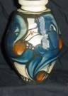
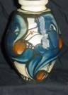

Er dekorationerne udført i blå og grøn på
en hvidgul bund, så er det svært at se forskel på,
om det er en ting fra Kähler i Næstved eller fra DANICO
– men er der et sammenskrevet HAK under bunden, er det en
Kählerting, da disse altid er stemplet med HAK.
Denne lighed er man vistnok og forståeligt lidt træt
af hos Kähler.
De 2 pottemagere fra Kähler er uden tvivl et par kompetente
herrer. Hornmaleriet ud i sådanne dekorationer er en svær
teknik, der kræver en sikker hånd, og især når
der arbejdes vådt i vådt. Der fyldes begitning (farvet
ler rørt op i vand) i et udhulet kohorn, hvor spidsen er
skåret af. I denne spids er der isat spidsen af en gåsefjer.
Gåsefjeren snittes skråt af og kan derved anvendes som
pen. Maleren kan med tommel- og pegefinger klemme omkring gåsefjeren
og dermed styre strømmen af begitning.
For den kunstneriske ledelse stod kunstmaler Eiler Løndal
(1887-1971). Om Løndal ikke får frie nok rammer til
udfoldelse af sit kunstneriske talent vides ikke præcist,
men han vælger at trække sig omkring 1922, og efter
sigende ødelægger han alle sine forme, inden han rejser,
så han må have været slem utilfreds.

Eiler Løndal (forrest) og Frederik Jørgensen
(siddende bagest) på Danico.
Danicos varer bliver forhandlet via agenturer til udlandet bl.a.
til USA.
Varerne fra Danico er under bunden stemplet med et indpresset
DANICO og et indridset nr. Nogle gange er der kun et nr. Er der
blot et nr. vil rettesnoren være, at nr. 1-499 og nr. 800-
og opefter tilskrives DANICO og nr.500-799 tilskrives Lervarefabrikken
Annashaab. Enkelte genstande, der kun har et nr., kan dog også
være Eiler Løndals fra hans tid i Århus.
Fordelingen er konkluderet ud fra bl.a. eksisterende kataloger,
billedmateriale og private storsamleres samlinger af keramik fra
DANICO og Annashaab.
Hvorfor der tilsyneladende er denne fordeling vides ikke, der
kan kun gættes på en form for aftale fabrikkerne imellem,
eller det kan have noget at gøre med Løndals skifte
fra DANICO til Annashaab, dette er kun gætværk.
Fabrikken må lukke i 1929. Konkurrencen er hård bl.a.
fra Lervarefabrikken Annashaab, som kortvarigt ansætter
Eiler Løndal og får godt gang i produktionen af Skønvirketing.
Niels Peter Nielsen er ikke sådan at kue, han starter eget
værksted i Dagnæs v/Horsens i 1930, Dagnæs Keramik,
her fremstiller han keramik i en helt ny stil. Flere unikating,
hvor en bourgognefarvet glasur bliver et af hans kendetegn.

Fabrikken i Dagnæs bliver lukket omkring 1946, og i 1947
åbner Niels Peter Nielsen igen værksted i Torsted,
ligeledes ved Horsens, og stadigvæk under navnet Dagnæs
Keramik.
Sønnen Carl Johan Nielsen bliver udlært hos faderen
og fører Dagnæs Keramik videre efter faderens død
i 1968.
Varerne fra Dagnæs stemples med et indpresset DAGNÆS
eller et indridset og håndskrevet DK under bunden.
Lervarefabrikken Annashaab, Egebjerg v/Horsens (1891-1958)
Fabrikken bliver startet af pottemager Jens Holm Rasmussen (1855--)der
er udlært i den kendte pottemager by Sorring v/Silkeborg.
I starten og helt frem til 1922 bliver der hovedsageligt fremstillet
husgerådsting og natpotter til Horsens fængsel.
Rasmussens stedsøn Peder Madsen (1876-1955) er blevet udlært
hos stedfaderen og bliver med tiden indsat i fabrikkens ledelse.
I 1922 kommer Eiler Løndal efter bruddet med DANICO og
der indledes produktion af pynteting så som vaser, krukker,
urtepotter, opsatser m.m. A’ la DANICO (dekoration med blomsterornamentik
og hornmaleri).
Nu er der 3 fabrikker, der næsten laver den samme dekoration
med blå/grøn lomsterornamentik på hvidgul bund.
Varerne fra Annashaab er stemplet under bunden med en presset
trekant, hvori der er et L, og nederst står der DANMARK.
Trekanten står for et A (Annashaab) og L’et står
for Lervarefabrikken. Ligeledes er der et indridset nr. Nogle
gange er der kun et nr. Der kan også være indpresset
ANNASHAAB.
Eiler Løndal rejser efter knapt et års tid, og dermed
er også fabrikkens kunstneriske dynamo væk.
Fabrikken lever indtil 1930’erne højt på hans
modeller. Herefter begynder der en svær tid, og i 1958 lukker
fabrikken.
Eiler Christensen Løndal (1887-1971)
Eiler Løndal er født i Silkeborg 1887 og bliver
uddannet kunstmaler, men fatter en stor interesse for keramik.
Han bliver ansat hos DANICO som kunstnerisk leder og har en stor
del af æren for DANICOs succes. 1922 forlader han DANICO
og bliver ansat hos Annashaab Lervarefabrik, hvor han er et års
tid. At han er så kort tid begge steder skyldes måske,
at han ikke får de udfoldelsesmuligheder, som han ønsker,
og som hans talent fortjener.
Han foretager mange rejser i Europa og til Konstantinopel, Jerusalem
og Cairo, hvor han samler inspiration, før han i 30’erne
flytter til Århus og helliger sig maleriet. Dog bliver der
stadig arbejdet i keramik. Hovedparten sælges direkte fra
værkstedet i Gerlachsgade og atelieret i Jyllandsallè
6, Århus. Foruden vaserne bliver der på værkstederne
i Århus også lavet flere skulpturer af pramdragere
og pottemagere.
Eiler Løndal i Gerlachsgade 1940
Stilen er for flere af tingenes vedkommende stort set den samme
som på både DANICO og Annashaab, og der skal et skarpt
øje til for umiddelbart at kende forskel. Det gør
heller ikke tingene nemmere, at Løndal vælger at
mærke mange af sine ting kun med et nummer, ligesom mange
af tingene fra DANICO og Annashaab.
I enkelte af tingene er dog stemplet Løndal.


Privatfoto fra Løndals egen udstilling i
Århus. De mange rejser sætter et tydeligt orientalsk
præg på hans arbejder. Efter Løndals død
køber Horsens kommune en del af dødsboet. En stor
del af disse ting er efter sigende, i årenes løb,
blevet brugt som gaver fra Kommunen.
Leon Dissing (1897-1986), Horsens
Leon Dissing er ud af en stor børneflok på i alt
8, hvoraf 7 kommer til at arbejde med pottemageri alle med egne
værksteder. Faderen Jens Andreas Pedersen Dissing (1866-1932)
er pottemager, og alle 7 bliver udlært hos ham.
Han er nogle år hos henholdsvis DANICO og Lervarefabrikken
Annashaab, inden han vælger at få fod under eget bord
i 1930, hvor han køber et værksted i Horsens.
Sortimentet er i starten ret begrænset, men snart udvider
han med fade, figurer, vægvaser, vaser, krukker, testel,
barselspotter, opsatser m.m.

Han laver nogle meget interessante ting med en sort glasur og
orangerøde kanter og ting i en spændende grøn
glasur a’ la vibeægsskal også med orangerøde
kanter.
Dissing er aktiv lige til det sidste skønt gigten i fingrene
plager ham som så mange af datidens pottemagere. Han prøver
kræfter med abstrakte relieffer og fremstiller mange af
de populære fade, krus, tallerkener, æggebægre
m.m. i en køn almuestil.
Udstilling Værkstedsbygningen eksisterer i dag i sin oprindelige
stil,
men anvendes ikke.
Varerne fra Leon Dissings værksted er ikke altid signeret,
men kan have et indridset og sammenskrevet LD under bunden eller
et indpresset DISSING med et indridset håndskrevet L foran.


{kind=link}
{kind=link}
{kind=link}
{kind=link}
{kind=link}
{kind=link}
{kind=link}
{kind=link}
{kind=link}
{kind=link}
{kind=link}